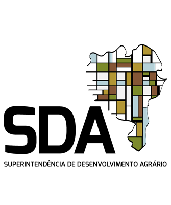

<!DOCTYPE html>
<html lang="pt-br">
<head>
    <meta charset="UTF-8">
    <meta name="viewport" content="width=device-width, initial-scale=1.0">
    <title>SDA - Geoportal de Ações Fundiárias</title>

    <link rel="stylesheet" href="https://unpkg.com/leaflet@1.9.4/dist/leaflet.css" integrity="sha256-p4NxAoJBhIIN+hmNHrzRCf9tD/miZyoHS5obTRR9BMY=" crossorigin=""/>

    <link rel="stylesheet" href="css/estilo.css">
</head>
<body>

    <div class="container-principal">

        <main class="mapa-container">
            <div id="mapa"></div>
        </main>

        <aside class="barra-lateral">
            
            <header class="cabecalho">
                <div class="logos-container">
                    
                    
                </div>
                <div class="texto-cabecalho">
                    <p class="orgao-principal">Governo do Estado da Bahia</p>
                    <p >Secretaria de Desenvolvimento Rural</p>
                    <p>Superintendência de Desenvolvimento Agrário</p>
                    <p>Coordenação de Ações Fundiárias</p>
                    <p>Núcleo de Operações Técnicas</p>
                </div>
            </header>

            <h1 class="titulo-principal">Mapa de Títulos por Município</h1>

            <section class="filtros-container">
                <h2>Filtros de Pesquisa</h2>
                <p>(Aqui entrarão os seletores de Território, Município, etc.)</p>
            </section>
        
        </aside>

    </div>

    <script src="https://unpkg.com/leaflet@1.9.4/dist/leaflet.js" integrity="sha256-20nQCchB9co0qIjJZRGuk2/Z9VM+kNiyxNV1lvTlZBo=" crossorigin=""></script>
    <script src="js/mapa.js"></script>

</body>
</html>